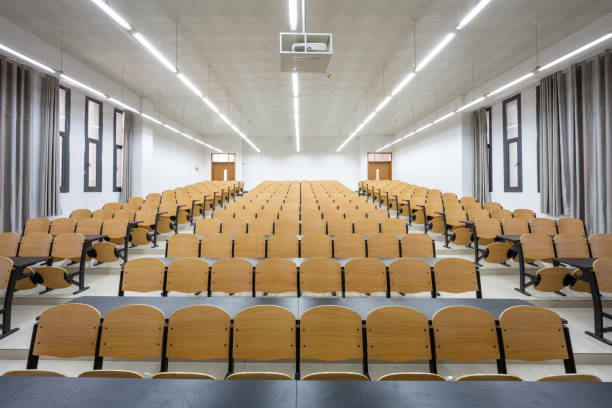
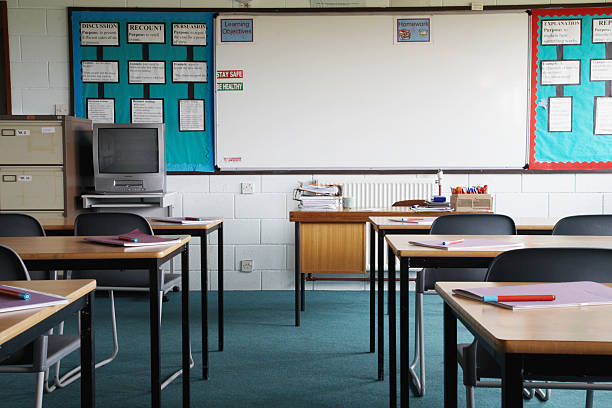
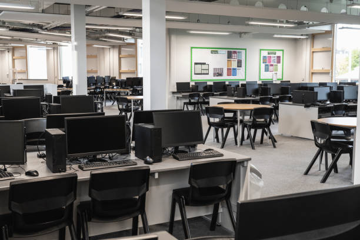
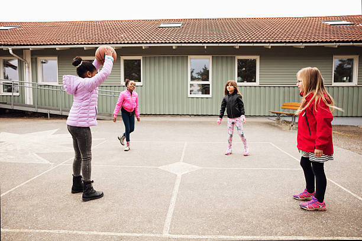
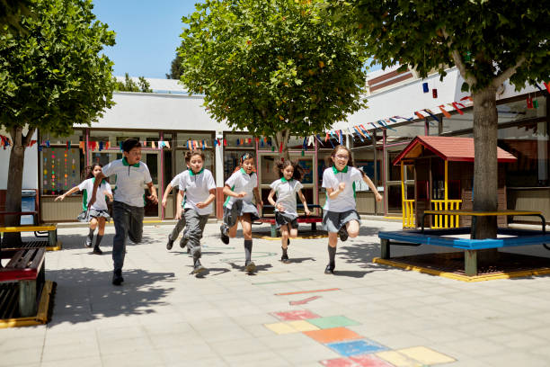
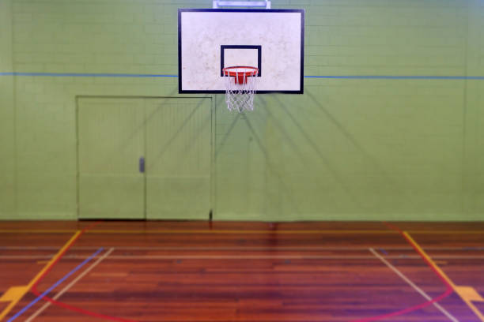

Our classrooms are designed to create an optimal learning environment, and we are proud to offer spacious classrooms fitted with interactive whiteboards. Our interactive whiteboards are state-of-the-art learning tools that enable our teachers to present content in a visually engaging and interactive way. The interactive nature of these whiteboards allows our students to participate in the learning process by interacting with the content being displayed, asking questions, and contributing to class discussions. With these interactive whiteboards, our teachers can display multimedia content such as videos, images, and diagrams, which enhance the learning experience for our students. Our classrooms are designed with the student's learning experience in mind, offering ample space for them to move around and work together on projects. These learning spaces are optimized to support collaboration and teamwork, and the interactive whiteboards facilitate these activities by allowing students to share their ideas and work together in real-time. Our classrooms also have advanced audio systems to ensure that every student can hear clearly, even in larger classrooms.  At MarkJunior School, we are dedicated to providing our students with the latest technology and software programs that support their learning. Our teachers are highly skilled and trained to use these tools effectively, ensuring that our students receive a world-class education. We understand the importance of providing a stimulating learning environment for our students, and our spacious classrooms fitted with interactive whiteboards are just one example of the innovative and dynamic approach we take to education. We are committed to providing our students with the best possible learning experience, and we invite you to explore all that MarkJunior School has to offer.
Our library is a hub of learning and exploration, with a wide range of resources and services designed to support our students and promote a love of reading and lifelong learning. Our library is home to a vast collection of books, including classic literature, contemporary fiction, non-fiction, and reference materials. Our collection is carefully curated to support our students' learning and interests, and we are constantly updating and expanding our resources to meet their changing needs. In addition to our print resources, we offer a range of digital media, including e-books, audiobooks, and online databases. Our students have access to a wealth of online resources, including academic journals, newspapers, and research databases, to support their studies and research projects. Our library is designed to be a comfortable and welcoming space, with quiet study areas, comfortable seating, and natural lighting. Our librarians are highly knowledgeable and passionate about their work, and they are always available to help students find the resources they need and support them in their learning journey. we are committed to providing our students with the tools and resources they need to excel in the digital age. Our computer lab is a state-of-the-art facility, equipped with the latest technology and software to support our students' learning and prepare them for success in the modern world. Our lab is home to a range of high-performance computers, each with a high-speed internet connection and a suite of software programs that support our students' studies across all subject areas. Our lab is also equipped with a range of other digital tools, including printers, scanners, and projectors, providing students with a range of resources to support their academic work. Our lab is designed to be a comfortable and welcoming space, with modern furnishings and a clean, well-lit environment. Our lab technicians are highly trained and knowledgeable, and they are always available to provide support and guidance to our students. At MarkJunior School, we believe that technology is a vital component of modern education, and our computer lab is an integral part of this commitment. Our lab is used for a wide range of activities, including research, writing, multimedia projects, and coding exercises, and our students have access to a wealth of online resources to support their learning. Overall, the computer lab at MarkJunior School is a vital resource for our students, providing them with access to the latest technology and digital resources to support their learning and prepare them for success in the digital age. We invite you to explore all that our lab has to offer and discover the power of technology at MarkJunior School.We also offer a range of services to our students, including book clubs, reading programs, and writing workshops, to encourage their engagement with the library and foster a love of reading and learning. Our computer lab is equipped with the latest technology, providing students with access to educational software and internet resources to support their research and learning. At MarkJunior School, we are committed to providing our students with a world-class education, and our library is an integral part of this commitment. We believe that the library is a vital resource for our students, providing them with access to the knowledge and inspiration they need to succeed in their academic and personal pursuits. We invite you to explore all that our library has to offer and discover the joy of learning at MarkJunior School.
 we are committed to providing our students with the tools and resources they need to excel in the digital age. Our computer lab is a state-of-the-art facility, equipped with the latest technology and software to support our students' learning and prepare them for success in the modern world. Our lab is home to a range of high-performance computers, each with a high-speed internet connection and a suite of software programs that support our students' studies across all subject areas. Our lab is also equipped with a range of other digital tools, including printers, scanners, and projectors, providing students with a range of resources to support their academic work. Our lab is designed to be a comfortable and welcoming space, with modern furnishings and a clean, well-lit environment. Our lab technicians are highly trained and knowledgeable, and they are always available to provide support and guidance to our students. At MarkJunior School, we believe that technology is a vital component of modern education, and our computer lab is an integral part of this commitment. Our lab is used for a wide range of activities, including research, writing, multimedia projects, and coding exercises, and our students have access to a wealth of online resources to support their learning. Overall, the computer lab at MarkJunior School is a vital resource for our students, providing them with access to the latest technology and digital resources to support their learning and prepare them for success in the digital age. We invite you to explore all that our lab has to offer and discover the power of technology at MarkJunior School.
we believe that physical activity and outdoor play are essential for our students' health, well-being, and development. Our outdoor facilities are carefully designed to provide our students with a range of opportunities for play, sport, and physical activity, all within a safe and secure environment. Our school fields are spacious and well-maintained, providing ample space for outdoor games and sports, including soccer, basketball, volleyball, and track and field events. Our playgrounds are equipped with a range of equipment, including swings, slides, climbing structures, and playhouses, providing our younger students with a range of options for imaginative play and physical activity. In addition to our fields and playgrounds,  we also offer a range of other outdoor spaces for our students to enjoy, including gardens, courtyards, and outdoor classrooms. These spaces provide students with the opportunity to learn about the natural environment, engage in gardening and horticultural activities, and enjoy the benefits of fresh air and outdoor learning. At MarkJunior School, we believe that physical activity is an essential component of a well-rounded education, and we are committed to providing our students with a range of opportunities for play and outdoor recreation. Our fields and playgrounds are designed to promote physical fitness, social interaction, and a sense of community, and we encourage all of our students to participate in outdoor activities and take advantage of the many benefits that come with spending time outdoors. Overall, the school fields and playgrounds at MarkJunior School are a vital component of our school community, providing our students with the space, resources, and support they need to engage in physical activity, develop their skills and abilities, and build lifelong habits of health and wellness. We invite you to explore all that our outdoor facilities have to offer and discover the joy of play and physical activity at MarkJunior School. 